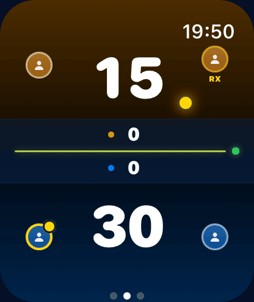
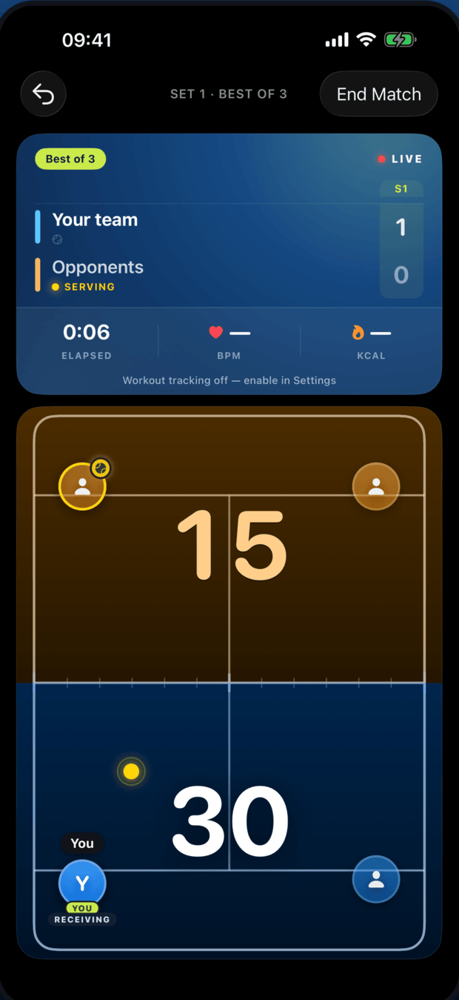

Score from your wrist
Leave your phone in the bag. Score in one tap and keep your rhythm.
- Live score, server and side on your wrist
- Syncs automatically to your iPhone
- Big, glanceable numbers between points
Pala keeps the count for you — right on your wrist — so you can just play. Tap to score, tap to undo. Games, sets and tie-breaks are handled automatically.


Pala is a padel scorekeeper for Apple Watch and iPhone. No menus to dig through, no setup mid-rally — it does one thing, keep score, and does it perfectly.
Leave your phone in the bag. Score in one tap and keep your rhythm.
Tap to add a point, tap to undo a mistake. Pala handles the rules.
Every match saved automatically, with the detail to spot your patterns.
The live scoreboard rides along in the Dynamic Island and on your Lock Screen. Tap it to jump straight back into the match.
Each match saves as a workout to Apple Health, with heart rate and calories from your Apple Watch.
Pala follows who serves and which side they’re on — point by point — so you never lose the thread.
Break-point conversion, deciding-set record, win rate by format — your real game, not vanity numbers.
Every match you’ve played, saved with set-by-set detail and a clean play-by-point recap.
English, French, Spanish and Dutch — Pala speaks your court.
Pala has no accounts, no servers and no analytics. Everything lives on your devices — and the only place it ever travels is the short Bluetooth hop between your iPhone and your Apple Watch.
Read the privacy policyPick best of 1, 3 or 5 and choose golden point or advantage. Name the players — or just play.
Tap the team that won the point. Pala counts games, sets and tie-breaks, and tracks the serve.
The match saves itself. Open History for set-by-set detail and your stats over time.
Download Pala and keep your eyes on the ball, not on the count.